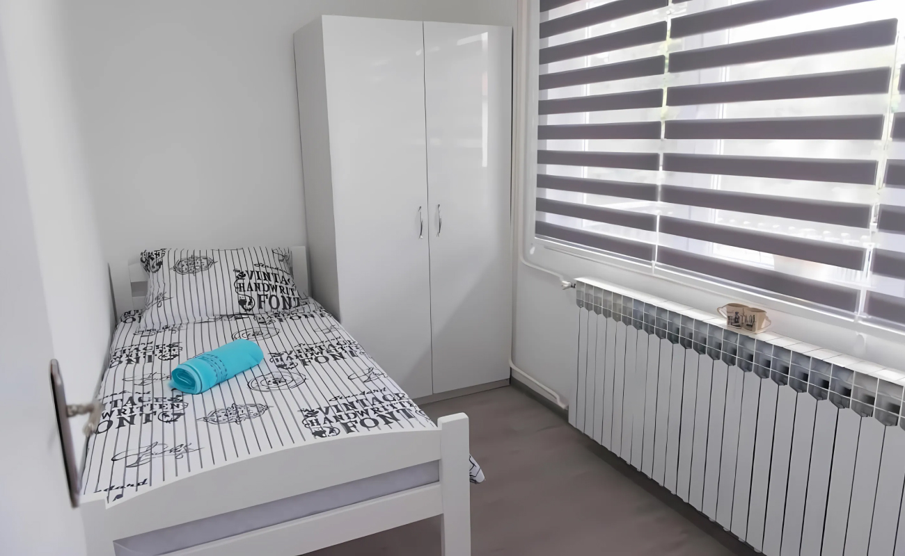

Apartmani blizu Panonskih jezera u Tuzli.
Editorial vodič kroz lokaciju, udaljenosti, sezonske preporuke i ponudu apartmana Apartmana Elegance, samo nekoliko minuta od centra grada i jednog od rijetkih slanih jezera u kontinentalnoj Evropi.
Pet minuta vožnje od jezera, dvije od centra. Ista ta bezbriga.
Apartmani Elegance smješteni su na Donjem Mosniku 7, u mirnoj uličici samo nekoliko zaokreta od jedne od najupečatljivijih atrakcija jugoistočne Evrope. Panonska jezera u Tuzli su rijetko slano jezero u kontinentalnom dijelu kontinenta, smješteno usred uređenog gradskog parka koji ljeti pulsira plažama, restoranima i porodičnim sadržajima.
Za goste koji žele kombinirati dane uz vodu s istraživanjem grada, lokacija je ono što gosti najčešće pamte: jednostavna logistika. Vozilom 5 do 10 minuta do jezera ili Trga slobode, šetnjom 20 do 25 minuta do Slane banje, brz pristup autobuskoj stanici i aerodromu.
Cijela ponuda od četiri apartmana skrojena je za različite tipove putovanja. Parovi koji žele tihi vikend. Porodice koje dolaze zbog dvodnevnog plesa na plažama Panonike. Poslovni gosti koji ostaju duže i traže pravu kuhinju, prostor za rad i mašinu za rublje.

Sve što treba znati o lokaciji prije nego rezerviraš.
Vremena su orijentaciona, mjerena polazeći od ulaza objekta na Donjem Mosniku 7. Vožnja se odnosi na uobičajeni saobraćaj izvan špica.
- 01 Panonska jezera · centar Tuzle, glavna atrakcija ≈ 3 km · 8 min vožnjom
- 02 Trg slobode · srce starog grada ≈ 2 km · 6 min vožnjom
- 03 Tuzla International Airport · niskotarifni letovi ≈ 8 km · 15 min vožnjom
- 04 Autobuska stanica Tuzla · linije za Sarajevo, Zagreb, Beograd ≈ 1,5 km · 4 min vožnjom
- 05 Bingo City Center · šoping zona, brendovi, supermarketi, kafići ≈ 2 km · 6 min vožnjom
- 06 Slana banja, restoran zona · lokalna kuhinja uz jezera 10 min pješice
- 07 Muzej istočne Bosne · kulturni izlet ≈ 2,5 km · 7 min vožnjom
- 08 Sportski centar Tušanj · stadion, bazeni ≈ 2 km · 6 min vožnjom
Slano jezero u srcu Bosne, kakvo ne postoji na više od dva mjesta u Evropi.
Panonska jezera u Tuzli nastala su 2003. godine, kada je gradski urbanizam transformisao prostor nad nekadašnjim solanskim eksploatacionim poljem u jedan od najupečatljivijih urbanih bazena u regiji. Voda u jezerima dolazi iz prirodnih slanih izvora, što ih čini jednim od rijetkih primjera urbanih slanih jezera u kontinentalnoj Evropi. Komercijalna sezona kupanja obično traje od juna do septembra, a kompleks ostaje otvoren cijele godine za šetnju i ugostiteljske sadržaje.
Šta tačno čini ovo jezero "slanim"?
Salinitet vode dolazi iz slanih sojanskih izvora koji se u Tuzli koriste od rimskog doba. Vodu obogaćuju minerali poput natrijuma, kalcijuma i magnezijuma, a same plaže su uređene s pijeskom, ležaljkama i ulazom za djecu. Lokalni stanovnici često navode da im je voda blagotvorna za kožu, a kupanje u slanoj vodi je posebno popularno krajem ljeta kada je temperatura najugodnija.
Šta gosti najčešće rade na jezerima?
Tipičan dan na Panonskim jezerima izgleda ovako: jutarnja šetnja oko kompleksa prije nego što sunce ojača, doručak u nekom od restorana na Slanoj banji, kupanje i odmor na ležaljkama tokom prijepodneva, a poslijepodne posjeta etno-arheološkom selu unutar kompleksa ili kafa uz pogled na vodu. Roditelji s djecom obično biraju plitki dio jezera s tobogani-ma, a parovi se odlučuju za mirnije šetnice oko zapadnog jezera.
Postoji li ulaznica?
Ulaz u sam park kompleksa Panonika je besplatan tokom cijele godine. Tokom sezone kupanja naplaćuje se ulaznica za korištenje plaža, ležaljki i kupališnih sadržaja. Cijene se ažuriraju svake godine, a aktuelne informacije najlakše je pronaći na zvaničnoj stranici Solana Tuzla ili kontaktiranjem turističke zajednice grada.
Da li je vrijedno posjetiti i izvan ljetne sezone?
Apsolutno. U proljeće i jesen kompleks je tih i prelijep za fotografiju, a restorani na Slanoj banji rade tokom cijele godine. Zima nudi posebnu atmosferu, posebno kada se kuhana vina i pekarski mirisi miješaju s pogledom na zaleđene rubove jezera. Mnogi gosti Apartmana Elegance dolaze upravo izvan glavne sezone zbog mirnijeg ritma i povoljnijih cijena smještaja.
Svaka sezona ima svoj razlog.
Tuzla ne živi samo ljeti. Evo kako planirati boravak ovisno o tome šta tražite.
Mirno proljeće
Temperature između 18 i 25 stepeni, jezera tek otvorena, manje gostiju i niža cijena. Idealno za parove i one koji traže opuštenu fotogeničnu šetnju.
Vrh sezone
Glavna sezona kupanja. Plaže su žive, restorani puni, atmosfera maksimalna. Najbolje rezervisati apartman bar 4 do 6 sedmica unaprijed.
Topla jesen
Voda još uvijek topla do polovine septembra, a šetnice obasjane bojama. Najbolji omjer cijene, vremena i mira tokom godine.
Mirna zima
Bez kupanja, ali s kafanama, kulturom i šetnjama uz jezera. Niskotarifni letovi do aerodroma Tuzla otvaraju vikend-destinaciju iz cijele Evrope.
Susjedstvo koje gosti pamte zbog mira.
Donji Mosnik je rezidencijalno naselje na samo nekoliko zaokreta od centra Tuzle. Tipičan dan ovdje počinje mirno, bez gradske buke, ali u pješačkoj distanci od svega što gostu treba. Pekara na uglu, mala trgovina na koji minut hoda, parking koji nije problem.
Za razliku od centra grada gdje saobraćaj i noćni provod znaju utjecati na spavanje, ovdje gosti rijetko prijavljuju buku. Ovo je značajan adut za porodice s malom djecom i poslovne goste koji ostaju duže.

- Mirna ulica bez prometa tokom noći
- Pekara, supermarket i caffe u krugu od 5 minuta pješice
- Besplatan parking na lokaciji
- Brza taksi i prevozna konekcija prema centru
- Sigurno okruženje za večernje šetnje
Četiri apartmana. Različiti tipovi gostiju. Ista lokacija.
Bilo da putujete u paru, s porodicom, u grupi ili poslovno, jedan od četiri apartmana odgovara vašem boravku. Svi su moderno opremljeni, klimatizovani, s besplatnim Wi-Fi-em i kuhinjom spremnom za samostalno snalaženje.

Deluxe apartman
Prostireći se na preko 80 kvadratnih metara, sa 3 odvojene spavaće sobe, dnevnim boravkom, kuhinjom i trpezarijom, te velikim balkonom. Idealan za vaš komforan odmor.

Trosoban apartman
Novoopremljeni apartman sa 3 spavaće sobe, kuhinjom i trpezarijom, te velikom terasom na kojoj možete uživati u ljetnim danima.

Dvosoban apartman
Novoopremljeni apartman sa 2 spavaće sobe, kuhinjom i trpezarijom, te velikom terasom na kojoj možete uživati u ljetnim danima.

Dvosoban apartman s dnevnim boravkom
Novoopremljeni apartman sa 2 spavaće sobe, dnevnim boravkom, kuhinjom i trpezarijom, te velikom terasom na kojoj možete uživati u ljetnim danima.
Šta gosti najčešće pitaju o lokaciji.
Koliko su Apartmani Elegance udaljeni od Panonskih jezera?
Apartmani Elegance nalaze se na Donjem Mosniku 7, oko 3 kilometra od Panonskih jezera. Vozilom je dolazak ispod 10 minuta, a šetnjom oko 25 minuta uz mirnu rutu kroz susjedstvo.
Šta su Panonska jezera i po čemu su jedinstvena?
Panonska jezera su sustav slanih jezera u samom centru Tuzle, jedan od rijetkih slanih jezera u kontinentalnom dijelu Evrope. Voda je obogaćena mineralima, a oko jezera je uređen gradski park s plažama, šetnicama, restoranima i sadržajima za djecu.
Kada počinje sezona kupanja na Panonskim jezerima?
Glavna sezona kupanja traje od početka juna do kraja septembra, s vrhuncem u julu i augustu. Maj i septembar nude blagu klimu uz manje gužve, a tokom cijele godine možete posjetiti okolne sadržaje, šetnice i restorane.
Imaju li Apartmani Elegance besplatan parking?
Da. Svi gosti imaju osiguran besplatan parking direktno uz objekat na Donjem Mosniku 7. Možete ostaviti vozilo i prepustiti se gradu pješice ili koristiti automobil za brz dolazak do jezera.
Koliko je apartman udaljen od centra Tuzle?
Centar Tuzle, Trg slobode i šoping zona, udaljeni su oko 2 kilometra. Vozilom za 5 do 10 minuta, a taksi do centra obično košta između 4 i 6 KM ovisno o dobu dana.
Da li je Tuzla International Airport blizu?
Aerodrom Tuzla nalazi se oko 8 kilometara od Apartmana Elegance, oko 15 minuta vožnje. Većina niskotarifnih letova iz Njemačke, Austrije, Švedske i Turske slijeće upravo ovdje.
Koji apartman preporučujete porodicama?
Za porodice s djecom preporučujemo Deluxe apartman od 80 m² (do 6 + 2 osobe) ili Trosoban apartman za grupe do 4 osobe.
Imaju li apartmani klimu, Wi-Fi i mašinu za rublje?
Svi apartmani imaju klima uređaj, besplatan brzi Wi-Fi i mašinu za pranje rublja, kao i kompletno opremljenu kuhinju s posuđem. Posteljina i ručnici su uračunati u cijenu.
Mogu li rezervisati direktno i izbjeći proviziju?
Direktna rezervacija putem našeg sajta ili telefona omogućava povoljniju cijenu od one na platformama, jer izbjegavamo proviziju od 15 do 18 posto koju zaračunavaju Booking i Airbnb. Pozovite +387 61 944 061 ili posjetite stranicu Rezervacija.
Šta još mogu raditi u Tuzli osim posjete jezerima?
U pješačkoj udaljenosti su Trg slobode, Stari grad Tuzla, BBI Center i restorani na Slanoj banji. Vrijedi posjetiti Muzej istočne Bosne, Sportski centar Tušanj i, ako ostajete duže, izlet do Bijelih voda ili Konjuha.
Da li primate kućne ljubimce?
Politika oko ljubimaca dogovara se individualno prije rezervacije. Pozovite nas na +387 61 944 061 ili pošaljite poruku putem Booking ili Airbnb platforme prije nego potvrdite termin.
Koji je najbolji način dolaska iz Sarajeva ili Zagreba?
Iz Sarajeva je vožnja vozilom oko 2 sata preko Olova ili autoputa do Doboja. Iz Zagreba je oko 4 sata kroz Slavoniju i prelaz Slavonski Šamac. Autobuska stanica Tuzle je samo 1,5 km od apartmana.
Rezerviši direktno. Bez provizije Bookinga ili Airbnba.
Najbolja cijena, brza potvrda, direktan kontakt s domaćinima. Pozovite ili rezervišite kroz formu.
Rezerviraj termin ili pozovite +387 61 944 061